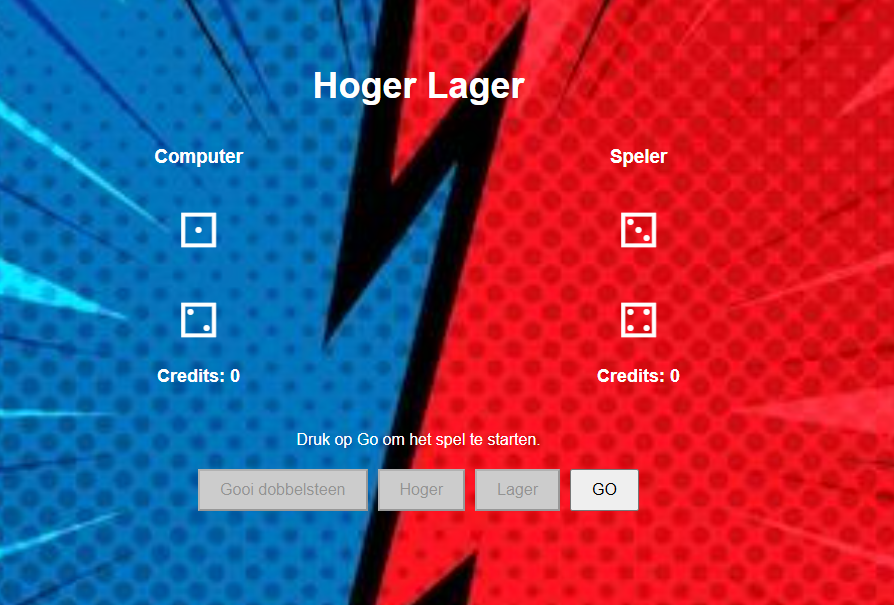
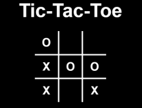
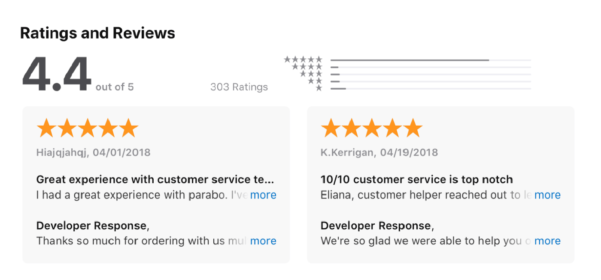

Projecten
Hoger lager
In het spel Hoger en Lager moet je raden of jouw worp hoger of lager zal zijn dan die van de computer. Kies eerst hoger of lager, gooi je dobbelstenen en krijg een punt als je goed hebt. Anders krijgt de computer een punt. Het spel gaat door tot de tijd om is, en degene met de meeste punten wint.
Boter kaas en eiren
Tic Tac Toe is een eenvoudig bordspel voor twee spelers, waarbij ze om de beurt een "X" of "O" op een 3x3 rooster zetten. Het doel van het spel is om als eerste drie van je symbolen op een rij te krijgen, dit kan horizontaal, verticaal of diagonaal. Het spel eindigt wanneer een speler wint of wanneer het bord vol is zonder winnaar, wat resulteert in een gelijkspel.
review your experience
"Review your experience" het reflecteren op je eerdere werk en projecten. Je bespreekt wat je hebt geleerd, welke uitdagingen je hebt overwonnen en hoe je vaardigheden zijn gegroeid. Dit toont je professionele ontwikkeling en aanpak aan potentiële werkgevers of klanten.